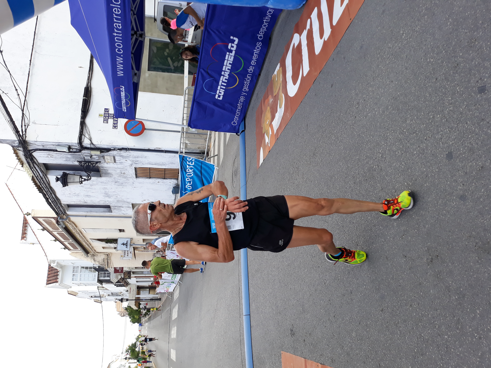
Un recuerdo especial
Uno de esos días de competición que siguen formando parte de mi historia.
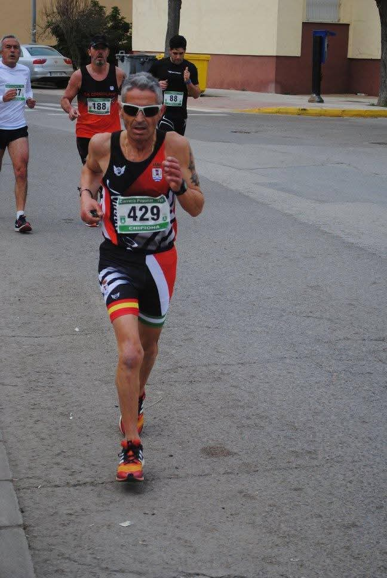
Cada carrera forma parte de mi historia. Algunas quedaron grabadas por el esfuerzo, otras por la emoción, por las personas que estuvieron conmigo o simplemente por la sensación de haber llegado hasta el final.
En esta galería reúno algunos de esos momentos que, con el paso del tiempo, siguen teniendo un significado especial para mí.
Cuatro momentos que guardo especialmente en mi memoria después de tantos años entre carreras, kilómetros y experiencias compartidas.

Uno de esos días de competición que siguen formando parte de mi historia.
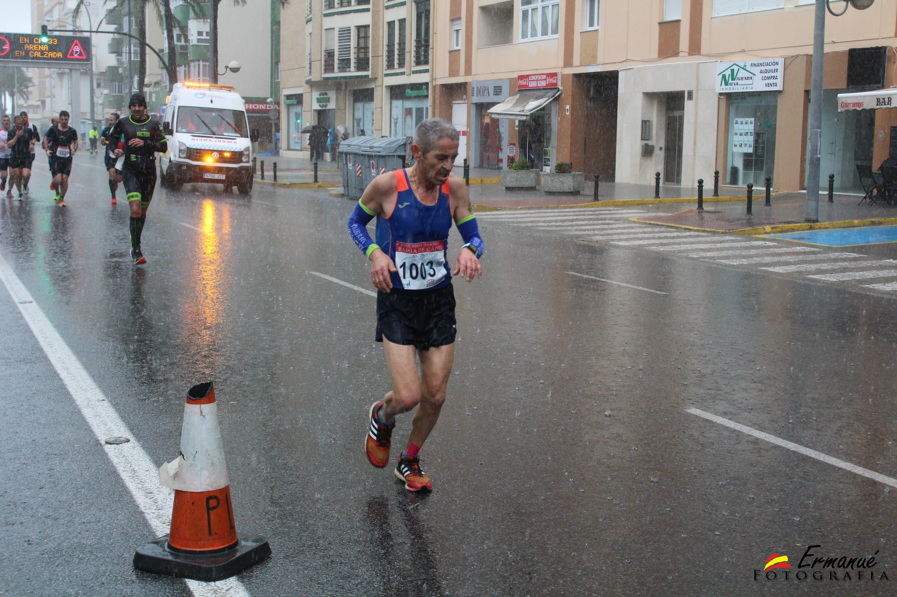
Otra imagen que conserva un momento importante de mi trayectoria.
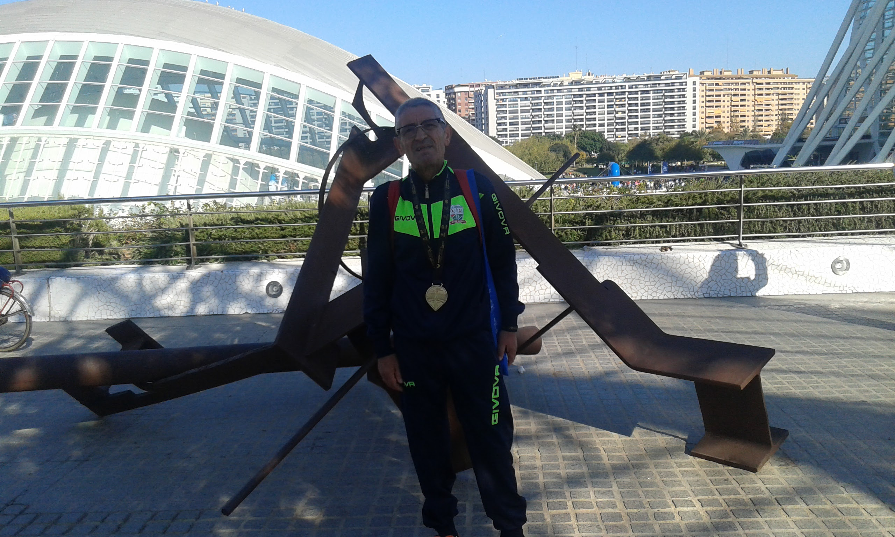
Una fotografía que forma parte de todos esos años dedicados al atletismo.
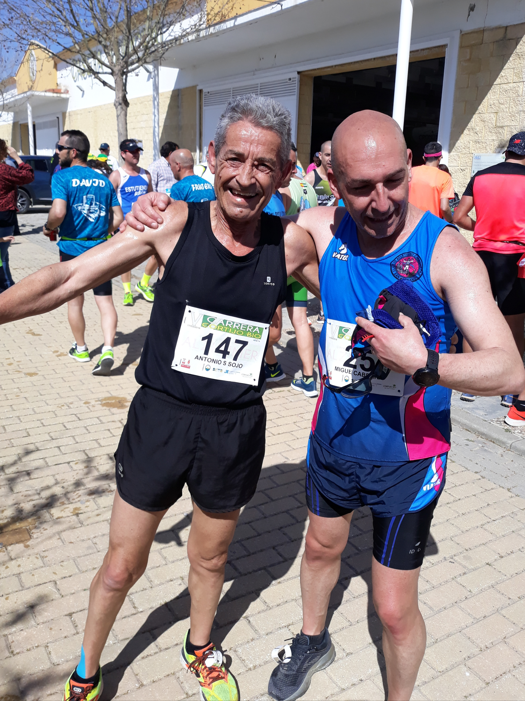
Una más de las carreras que quedaron para siempre en mi memoria.
Los pódiums representan una pequeña parte de todas las horas de entrenamiento, sacrificio y constancia que hay detrás de una carrera.
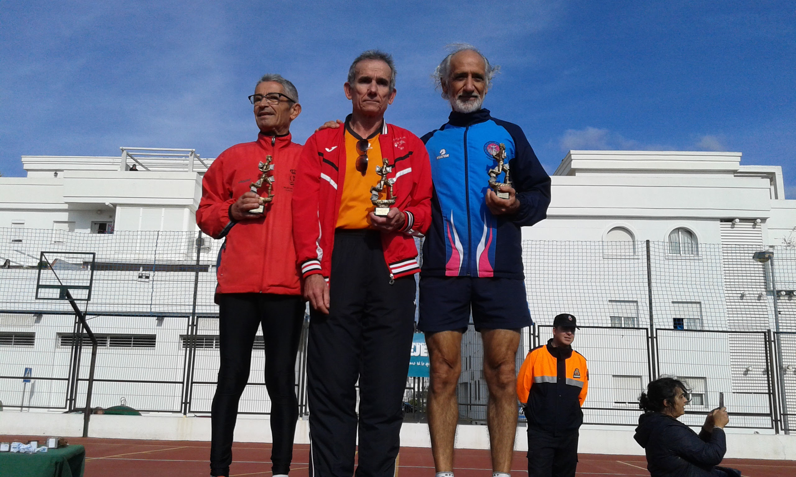
Un momento de reconocimiento después del esfuerzo.
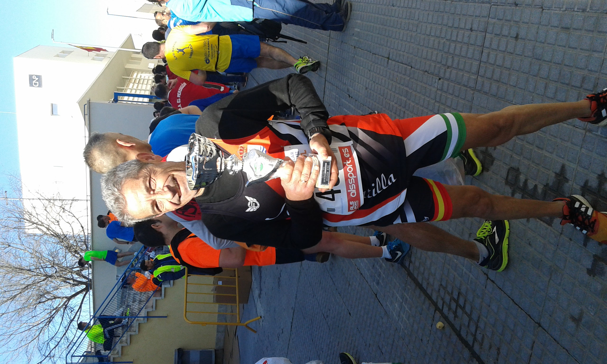
Una imagen que guarda uno de esos momentos especiales de competición.
.jpg)
Otro instante que forma parte de mis recuerdos deportivos.
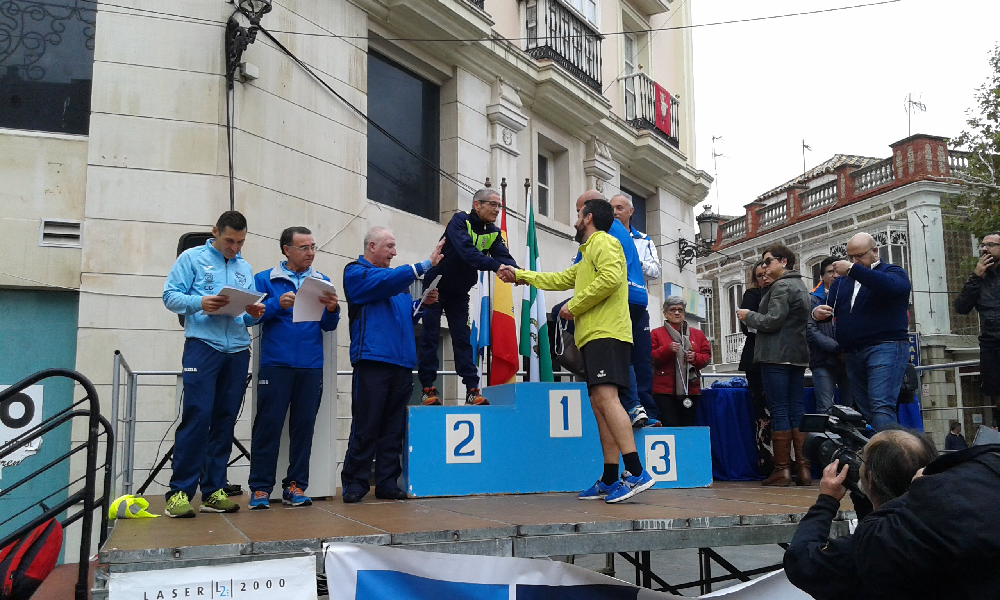
Un momento que permanece unido a mi trayectoria como corredor.
Hay carreras que se recuerdan no solo por el resultado, sino por lo que se sintió aquel día y por todo lo que significaron.
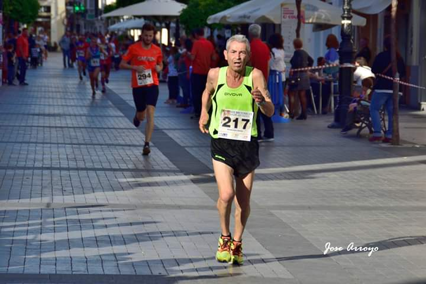
Uno de esos momentos que siguen vivos en el recuerdo.
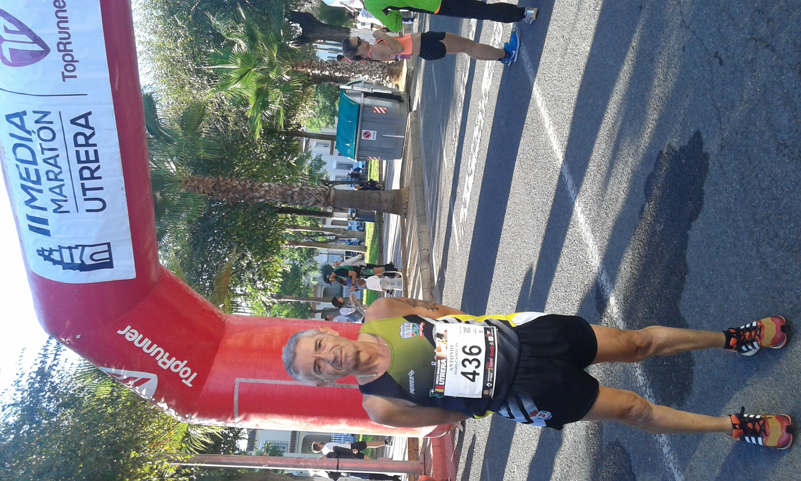
Porque cada carrera tiene también una historia detrás.
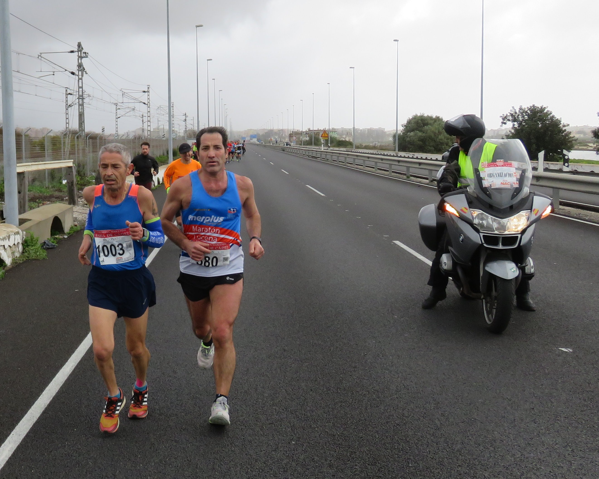
Una imagen ligada a una etapa muy importante de mi trayectoria.
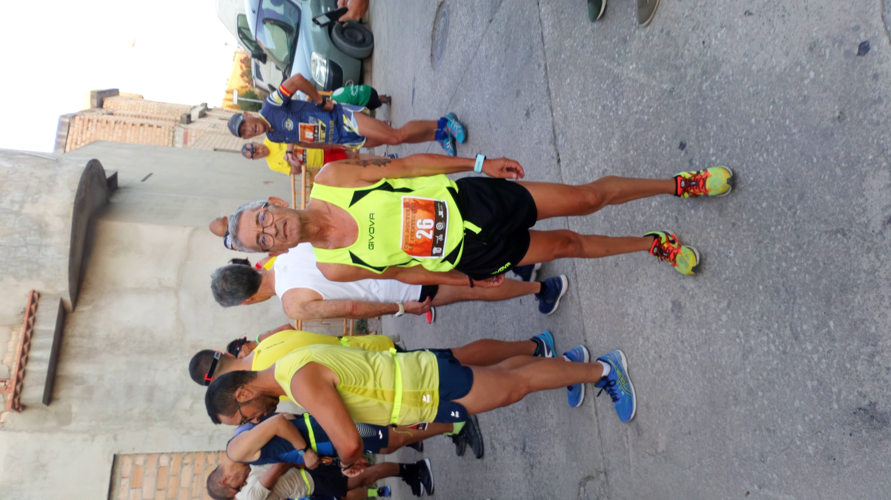
El esfuerzo, la emoción y la satisfacción de seguir corriendo.
Mirando estas fotografías recuerdo que una trayectoria no está formada únicamente por resultados. Está hecha de kilómetros, entrenamientos, compañeros, dificultades, alegrías y, sobre todo, de las ganas de seguir adelante.